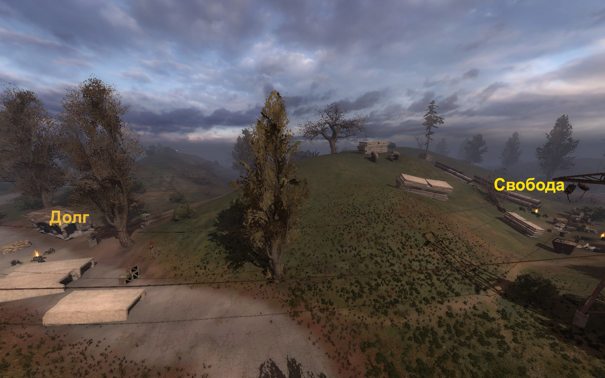

Пролог (или же «Вместо вступления...»)
Данный опус — результат моих размышлений на тему того, почему наша с тобой любимая игра актуальна и по сей день, и почему все три игры серии S.T.A.L.K.E.R. играются совершенно по-разному.
Сие произведение НЕ следует читать следующим лицам:
- тем, кто не играл ни в одну игру серии;
- тем, кто не готов читать стену текста с моей оценкой дизайна игры и моими догадками по поводу психологии игрока;
- людям, которые занимаются критиканством (не критикой; это разные понятия);
- детям до 3-х лет, беременным женщинам, людям старческого возраста, крупному рогатому скоту, жидорептилоидам с планеты Нибиру, шизофреникам и людям без чувства юмора.
Для начала я хотел бы представиться.
Мой псевдоним – Schtainhardt, имя – Ярослав, но для многих я – Штайни, а для самых близких — Яр. Да, как тот самый Дядька Яр из трилогии. И мне даже ни чуточку не обидно, когда меня называют его именем.
Если кратко попытаться рассказать о моих взаимоотношениях со сталкерской вселенной, то я могу сказать примерно так: «имею представление».
До «великого слива исходников» занимался моддингом почти во всех отраслях понемногу, но успехов особых не достиг — слишком большой проект пытался построить. А потом руки опустились, амбиции утихли, и теперь я занят этим всем просто потому, что мне интересно и скучно. В целом, я знаю, как оно всё работает «под капотом», т.к. мало-мальски есть опыт работы с С++ и игровым движком X-Ray. Могу помочь советом, но только если у меня настроение хорошее =) Ну и то, что ты сейчас читаешь — это моя первая серьезная попытка создания статьи или чего-то такого.
Думаю, этой информации тебе будет достаточно, чтобы понять, каким фруктом я являюсь.
... и если ты не относишься ни к одной из категорий людей из списка выше, то добро пожаловать! Устраивайся в кресле поудобнее (можешь даже чай с печеньками принести) и давай с тобой вместе порассуждаем о том... Впрочем, сам увидишь, о чём именно. Поехали!
С чего начать, если начать не с чего?
В далёком хрен-знает-каком году компания GSC продолжала кормить фанатов обещаниями, что уже «вот-вот щас, 2 минутки подождите» выйдет мифический проект S.T.A.L.K.E.R. с передовой графикой, фотореалистичными текстурами и труЪ-СНГ-сеттингом, который будет щедро приправлен экшном, эксплорингом и RPG-составляющей.
Если ты ещё не понял, к чему я клоню, то это история сборок игры. Давай именно оттуда я начну вести логическую цепочку своего повествования.
/ Zone Chronicles /
Конечно же, сравнивать черновики-билды с релизной версией ТЧ — идея достаточно глупая. Билдоманов в нашем мире остаётся всё меньше, а некоторые и вовсе покидают ряды игроков как таковых — работа, семья, дети... Но взамен им приходит поколение, которое считает, что разработчики намеренно вырезали какие-либо игровые механики, контент и другие «ништяки», которые мы можем наблюдать в пускай даже и очень нестабильных, но запускающихся (а это огромное достижение) сборках игры.
В сборках игры мы с тобой видим некий эскиз, а точнее — несколько эскизов составляющих одной целой игры. В билдах в кучку сложены звуковые эффекты, фоновая музыка, освещение, цветовая гамма, сеттинг игрового мира (в т.ч. и «закадровый») и прочие довольно умные вещи. Убери хоть одну — все станет иным. Но чертовски важно то, что эти составляющие могут не стыковаться между собой. Для эксперимента попробуй вместо привычного эмбиента на локации включить какой-нибудь Trance Minimal Techno или же ради интереса попробуй играть с красной текстурой травы.
Не вяжется? То-то же!
Мы с тобой ненавязчиво подошли к разговору о том, что же именно происходит в черепной коробке каждого игрока, как на это влиять при помощи уже упомянутых эскизов или полноценно сформированных составляющих игры и к чему это всё приведет. Запомни этот момент, а я пока что продолжу тираду о билдах.
Посмотри на Кордон в двух вариантах и подумай, какие ощущения у тебя возникают. Скриншот ТЧ показывает нам завершенную композицию, а на скриншоте из билда 1935 заметно слегка неправильное освещение локации и ядовитый зеленый цвет, но если позволить себе списать эти огрехи на то, что билды — это черновики дизайна, то релизный Кордон и билдовский Кордон отличаются друг от друга примерно так же, как город отличается от леса. Давай же пройдёмся по ним и соберем пищу для размышлений!
Назад в будущее, или «Такую страну развалили...»
Давай ещё разок определимся по поводу основных «кубиков», из которых состоит фундамент атмосферы. Я бы выделил следующие:
-
Информация, которую получил игрок до момента перехода на определенную локацию или местность
Если бы тебя заранее не напугали, что «в этих страшных подвалах водятся злые волки снорки, которые ранее были людьми и которые хотят тебя укусить за бочок сожрать без соли», то ты бы не понял, какая именно неведомая херня тебя атакует, да ещё был шанс того, что ты просто пробежал бы очередную лабораторию с каменным лицом
-
Дизайн игрового уровня (левел-дизайн)
Ландшафт, архитектура, количество «воздуха» и пространства для манёвра, укрытия, пасхалки, тупики с интересным контентом, растительность, точки спавна, скриптовые сценки и ещё тысяча способов не дать игроку заскучать и пойти писать гневный отзыв «стало скучно, вернул деньги» в Steam
-
Цветовая гамма
Давно доказано, что сочетание цветов, которое мы воспринимаем своими глазами и обрабатываем мозгом, способно настраивать нас на определенную эмоциональную «волну». К этому пункту также относится и погода на уровне, т.к., во-первых, «под капотом» именно через её конфигурационные файлы изменяется цветовая гамма, а, во-вторых, всяческие погодные явления ещё больше усиливают эффект погружения в игру
-
Звуковое сопровождение
В эту категорию я отнесу как фоновую музыку, так и случайные звуки для создания атмосферы (которые можно было бы назвать «FX» или же «спецэффекты», хоть это и недостаточно правильная формулировка)
-
Цель, информационная и эмоциональная нагрузка
Я бы очень сильно обиделся, если бы меня заставили бежать из пункта А в пункт Б 30 минут реального времени для того, чтобы нажать одну кнопку и вернуться обратно. Или же если бы мне показали 20-часовую катсцену с лежащим на полу камнем. Поэтому было бы неплохо, если бы игровое окружение преследовало какую-то определенную цель, могло принести игроку какие-либо эмоции, рассказать что-то, чего он до этого не знал, уточнить какие-то детали Вселенной в которой он находится и вообще помочь ему обрести смысл своей (пускай даже и короткой, но очень насыщенной) игровой жизни
Давай проведем эксперимент: посмотрим глазами простого игрока на билды (в районе сборок 19хх), а затем посмотрим на релизные версии ТЧ, ЧН и даже ЗП, после чего попробуем сравнить полученные игровые впечатления друг с другом.
Билды тебя встретят откровенно кривой механикой игры, которая часто ставит крест на играбельности, стабильности и на желании продолжать эти пляски с бубном для запуска свежескачанной сборки. На другой чаше весов у нас достаточно интересный набросок атмосферы.
Да, краски на этом холсте ещё не высохли, да и картина пока что только в черновом варианте, но у нас на экране вполне сформировавшаяся серость, ржавчина и колючая проволока. В колонках или в наушниках изредка слышны закадровые вопли человека, который доживает в аномальном поле свои последние секунды. На фоне шумит dark ambient за авторством Владимира Фрея, который более известен под псевдонимом MoozE и уже есть некоторые цели, которые нам ставит торговец Жаба или же «более релизный» Сидорович.
/ Алексей Сытянов, Ведущий геймдизайнер и сценарист S.T.A.L.K.E.R.: Shadow of Chernobyl / > Цитата <
Не сказал бы, что в моей душе обитал полный покой, когда я впервые бегал по локациям сборки 1935, которую любезно предоставила нам компания GSC Game World. И это примерно то, что могло бы вписаться в жанр «хоррор», если бы дизайн игры продолжал следовать вектору развития, который был задан в сборках того времени. Как насчет подробного рассказа о всяких страшных экспериментах в Х-лабораториях? А если это всё подать под соусом страдания человечества, то я бы сразу прикупил себе пару-тройку лицензионных ключей такой игры. Не Silent Hill, конечно, и не Cry of Fear, но будем откровенны: психологический триллер намного приятнее переживать, чем видеть на экране пригоршню скримеров и титры в финале. И если сравнивать дизайн сборок с дизайном релизных версий, то перед нами возникает две разных игры, но об этом позже.
Тень Чернобыля лишилась нейтралитета в плане цветокоррекции и уже заметны вмешательства в картинку: Кордон выполнен в тёплой цветовой гамме и на нём довольно людно, спокойно и... весело. Но справедливости ради стоит отметить, что цветокоррекция качественная и отдельно подобрана для каждого игрового уровня, что придаёт всем локациям уникальность (что чертовски важно).
Вдалеке больше не вопят сталкеры, которых наматывает на аномалии. Да и вообще всё звуковое пространство стало равномернее. Фоновая музыка всё ещё присутствует, но уже понемногу «размазывается» в общей атмосфере из-за плотной населённости уровней, постоянной беготни и отсутствия явных «триггеров», заставляющих тебя услышать звуковой фон.
Именно так. Хоть отчаянности и опасности там всё ещё довольно много, но ржавой арматуры на полу поубавилось, население Зоны стало плотнее, разнообразие монстров снизилось и, по правде говоря, это не такой уж и негативный момент, ведь уменьшился фактор страха, который мог препятствовать желанию исследовать игровой мир. Я бы ни за что не пошёл на метку на карте без нужной экипировки и запаса патронов, если бы у меня были подозрения, что там сидит какая-то ебака и ждёт, когда к ней в лапы угодит очередной исследователь. При этом лояльный игровой баланс ТЧ позволяет почти без дискомфорта пройти игру вообще без какой-либо вменяемой экипировки.
Чистое Небо радикально окрашивает все уровни в оранжевые тона, а упомянутые выше серость и ржавая арматура остались разве что в интерфейсе. Вместо атмосферы безысходности всё превращается в лютый АКШОН. Да такой, что аж адреналин по монитору стекает! Поэтому ни о какой спокойной (или жуткой) атмосфере опасности речи идти не может. И всё это подкреплено сюжетом, который больше напоминает мультфильм «Ну погоди!», в котором главной целью является догнать Зайца Стрелка и у игрока нет времени даже на то, чтобы выдохнуть воздух из лёгких.
Но, справедливости ради, можно отметить тот факт, что в ЧН всё же есть минутка отдыха. Игроку позволяют расслабиться на базах группировок, где можно ближе узнать быт каждой из фракций. Это довольно интересно и атмосферно, но это атмосфера несколько иного сорта.
Ну а Зов Припяти лично для меня по сей день остается загадкой.
Звуковой фон очень сильно изменился и это очевидно, ведь это уже второй аддон, музыку (а точнее — эмбиент) к которому пишет Алексей Омельчук. Но изменения становятся явными только при прохождении ЗП. Почему же?
Ну, во-первых, игроку всё же дали некую свободу действий и отсутствие такой сильной беготни туда-сюда по локациям.
Во-вторых, сами локации стали большими, и теперь их всего три (если говорить именно об основных уровнях).
Ну и, наконец, третий фактор — следствие двух предыдущих. Игроку теперь можно осмотреться, вслушаться в окружение, на фоне которого саундтрек играет намного дольше, т.к. игрок, по факту, дольше находится на уровне.
Особенностью стал факт того, что саундтрек занимает передний план в звуковой композиции. Звуки окружения по прежнему присутствуют, но часто занимают позицию шума. Вероятно, звуков достаточно много и они не несут какого-то смысла — шуршат деревья, слышны вполне себе обычные звуки фауны и флоры — ну и хрен с ним. Поэтому мозг игрока быстро перестаёт воспринимать этот механизм игры как часть повествования: игрок — существо ленивое =)
Если говорить о цветовой гамме, то она стала повсеместно нейтрально-коричневой. И если в ЧН разница в степени «оранжевости» всё же прослеживалась, то в ЗП само понятие цветокоррекции куда-то испарилось.
Сюжет в аддоне является тем, что двигает игрока вперед, но мне — далеко не любителю песочниц — завязка сюжета кажется невыносимо скучной. Пойди туда, сходи сюда... Из-за того, что порции информации (даже порой очень очевидной) выдаются игроку очень редко, я, играя в третью часть S.T.A.L.K.E.R., совершенно перестал замечать какую-либо цельную историю. Соглашусь, она есть и если напрячься и захотеть, то её увидишь. Но... Хэй! Мы же играем в игры не для того, чтобы сильно напрягаться, верно? В ТЧ тебе после каждого сюжетного квеста Бармен (или же Сахаров и Сидорович) внятно и почти на пальцах объяснял, что написано в бумажках, которые ты притащил. В Зове Припяти же игроку предстоит усиленно думать и все факты он сможет получить только ближе к финалу, когда на базе военных в Припяти появится Стрелок.
Декорации: тепловоз против электрочайника
Если бы мне задали вопрос «Как описать вселенную игры тремя словами?», то я ответил бы примерно так: хардкор, говно и ветки!
Давай вместе подумаем, почему игра нравится среднестатистическому игроку, который живёт на территории СНГ. Другие области земного шара брать бессмысленно — там на игроков оказали влияние только «чики-брики и в дамки» и первоисточник в виде «Пикника на обочине». Вот ответь на такой вопрос: ты часто видишь чайник? Самый обыкновенный чайник, в котором ты греешь воду для того, чтобы сделать себе горячий напиток. Пожалуй, каждый день и не раз, верно? А если я спрошу тебя «Ты часто видишь брошенный ржавый электровоз?», то каким будет твой ответ?
Я веду к тому, что вся эта постапокалиптическая «атмосфера» интересна нам с тобой просто потому, что она для нас в новинку или же не мозолит глаз. Но даже при условии её чуждости мы ощущаем что-то до боли знакомое, ведь фоновые декорации этой пьесы мы видим каждый день, но просто не обращаем на них особого внимания.
Среди этих декораций, конечно, есть и то, что увидеть в реальной жизни мы никак не можем. Мутанты, аномалии, артефакты — это уже составляющие мира, которые являются составными частями геймплея.
И если на минутку задуматься о том, как они расположены, то можно заметить забавный факт: с каждым аддоном аномалии всё больше начинают «прятаться» от игрока, монстры перестают мешать что-либо делать, а «разблокируемые» слоты под артефакты в ЧН и ЗП «притормаживают» прокачку игрока. Но есть проблема. И кроется она в том, что баланс ЧН не подготовлен к новым реалиям. В Тени Чернобыля мы имеем разнообразные характеристики артефактов (о, да! -233% кровотечения), которые имеют плюсы и минусы. А последующих частях всё превратилось в единственный математический квест по снятию радиации взамен на какие-то приемущества. Максимум слотов всё тот же: их пять. Но «кубиков»-артефактов при этом необходимо использовать больше, чем требовалось в ТЧ для достижения аналогичного эффекта.
И раз уж тема идёт в техническое русло, то...
Я медленно распаковываю твои игровые ресурсы...
... а также начинаю рассуждение об технических и дизайнерских моментах нашей прекрасной игры.
Остановились мы на том, что аномалии вместе с монстрами с выходами новых аддонов начали лучше прятаться от игрока. И иногда мелькают моменты, которые с точки зрения ЛОРа игры (сформированного именно «Тенью», а не другими аддонами и сборками) мы не в состоянии объяснить, но в состоянии простить.
Также возникает вопрос относительно зомбированых, которые находятся в различных уголках локаций. Согласно сценарию, Выжигатель мозгов довольно давно отключен и даже отряд Монолита уже успело «отпустить». Почему же тогда зомбированые сталкеры продолжают респавниться в таких больших количествах?
По моему мнению, ТЧ — представитель серии с оптимальным балансом расположения живности и аномалий. Иногда мелькают странности, но они приятны глазу и именно поэтому мы готовы простить логические неувязки, а иногда и вовсе их не замечаем. Псевдогигант в Х-лаборатории выступает неким «мини-боссом» (потому что к тому времени у игрока только «Заря» и автомат Калашникова) и сказано, что это очень редкий монстр. Полтергейсты не расположены вне лаборатории, где они были созданы, а контролёров при активном прохождении можно вообще не встретить, если пулей вылететь на поверхность в финале «подземелья Агропрома», испугавшись внезапного крика. «Зачистка» же при этом приносит некое удовлетворение игроку, ведь вся живность довольно сильно мешает продвижению вперёд по многим линейным уровням игры. Монстры выполняют свою непосредственную функцию: быть трудностью для игрока. А ещё из них выпадают хвосты, лапы, ноги, руки, глаза и прочий лут, который можно загнать по спекулятивной цене при очередном посещении торговца.
В ЧН головной болью, скорее, являются люди, чем мутанты, а в ЗП единственной занозой в пятой чакре являются тушканы, которые не заслоняют игроку проход далее, но при этом причиняют КОЛОССАЛЬНОЕ неудобство.
XXX: В ЧН никто не чувствовал нужды в техниках. В ЗП нужно исправить эту проблему!
YYY: Ну мы снизили качество всех предметов, теперь они ломаются быстрее.
YYY: НАТОвские пушки теперь продаются изначально сломанными.
YYY: У советского оружия разброс становится на весь экран после трёх выстрелов.
YYY: Экзоскелет и «Сева» рвутся на лоскуты буквально после покупки, а «Заря» сделана из занавески.
YYY: Куда уж хуже? Как ЕЩЁ можно заставить игрока испытать всю экипировку игры?
XXX: Это всё не то. Нам нужно что-то кардинальное!
ZZZ: Отправьте за игроком толпу крыс, которые будут жрать его шмотки. Чем не решение?
XXX: Отлично. Идея мне нравится. Давайте пустим это в продакшн!
Если в первых двух частях игры заметно линейное (или не очень) возрастание крутости снаряжения одновременно с крутостью проблем, то в последней части мы можем со старта насобирать денег и заказать себе кучу ништяков у Шустрого. Ouch... Я слышу хруст, с которым ломается бóльшая часть RPG-подобной прокачки персонажа в игре. Играть от такого станет менее интересно, ведь пропадает тот «вызов», который игра бросает игроку, буквально, крича ему в лицо «Давай, убей химеру из табельного ПМа, давай! А если не можешь, то иди собирать деньги на Форт и пробуй снова!».
Заметна тенденция «укрупнения» локаций. Тесный ТЧ с его узкими подземками, но «чистыми» открытыми локациями сменился более «рыхлым» ЧН с тем же набором уровней, на которых образовались ещё и горы мусора, служащие укрытиями в перестрелках. В ЗП Путепровод «Припять-1» не особо отличается от надземных локаций ввиду его огромных размеров: потолка не видно, высота проходов в три этажа — это же убийцы давящей атмосферы! А во тьме больших подземелий часто можно и не разглядеть красо́ты уровня. Там есть экшн, газ и отряд, и они все дружно мешают нам увидеть хоть какие-то атмосферные детали, заслуживающие внимания. Миссия эпическая, но сама локация «пролетела мимо».
Из-за больших локаций ЗП особо нуждается в механике фаст-тревела, которая была введена в ЧН. Быстрые переходы позволяют скрыть от глаз игрока неравномерность населённости локаций, а также ускорить скучное передвижение между ключевыми точками.
При этом симуляция отрядов в ЗП работает логично, правильно и всегда, чего нельзя сказать о ЧН, в котором война группировок создаёт отряды, которые прибегают к тебе за три-девять земель. А по истечении всех военных действий движение отрядов в игровом мире вовсе прекращается.

ТЧ возрождает отряды на левел-чейнджерах и это иногда выглядит топорно, хотя сталкеры-одиночки, которые бродят по Кордону, мне понравились: в них есть дух сталкерства, а не некого группового бандитизма, который появился позже.
И если брать во внимание размер локаций и количество проблем на них, то ТЧ не проводит добровольно-принудительных мероприятий по обновлению инвентаря. ПМ, выданый Волком, сломается примерно на Радаре, а костюм, выданый Барменом, вообще можно не снимать.
Особо редкие и особо крутые образцы оружия можно добыть, обыскивая тайники, информацию о которых мы добываем из КПК убитых врагов (или союзников — тут вопрос остаётся на совести игрока) и этим ТЧ мотивирует убивать врагов. В ЧН тайники можно купить и это экономически сомнительное дело, ведь халява игроку всегда приятнее, чем трата денег для того, чтобы «выйти в ноль». Формально, мы покупаем начинку тайника со скидкой, которую нам дают чисто из-за того, что мы сами всё заберём. Кто там не любит кейсы и лутбоксы...? Ничего не напоминает? Хотяяя... В первых двух частях есть интрига, ведь тайник это контейнер, внутри которого может быть всё, что угодно.
В ЗП тайники, как геймплейная фишка, вовсе почти не заметны и отошли на третий-четвёртый-пятый план: осталась только циферка в КПК, которая иногда нам напоминает, что удача посетила нас определённое количество раз, а лут виден издалека и ничем не отличается от того, который просто упал из рук убитого НПС. Интрига пропала, интерес понизился. Oops...
«Особый» лут больше всего мне понравился в ТЧ. Почему? Потому что он уникален в своём роде. За снаряжение «со стрелочкой» есть желание бороться. ЧН в этом плане немного отстаёт: почти все особые предметы — это стандартные предметы игры, но просто слишком редкие, как для того, чтобы выпадать из случайных НПС. Я веду к тому, что в них нет никакой «аномальности» (как у той же «аномальной куртки новичка» или «боевого Чейзера»). Да и вдобавок к этому они ещё и не модифицируются у техников. Это некая крутость, которая почему-то работает наоборот.
А в ЗП уникальные вещи можно заказать у Шустрого, что по сути является просто некой отсроченной покупкой, а не бонусом по мере прохождения игры. Есть, конечно, исключение в виде «SIG Стрелка», но какой-то особой «Стрелковости» я не заметил. Может потому, что, начиная с ЧН, вся баллистика в игре уже «не та самая»?
Отдельным классом особых предметов можно считать артефакты, которые в ТЧ просто лежат на земле. Игрок знает, за чем он идёт, но при этом очень густые аномалии (и низкий коэффициент стойкости на сложности «Ветеран» и выше) заставят тебя перезагружать сохранение несколько раз. Очень часто в этих аномальных полях есть некий проход, который нужно исследовать болтом. И артефакт на полу — та награда, которую приятно получить за упорство и эксплоринг. Она должна там лежать — это то, что создаёт некий квест, вот, буквально, на ровном месте. И, да, потом нужно выйти оттуда живым, что тоже не всегда просто. Иногда, конечно, игроку выпадает совершенно нелогичный и «вредный» джекпот в виде рождения в аномалии артефактов топового уровня на стартовых локациях. Слепая удача — она такая.
В ЧН добавили механику детекторов, что позволило спрятать от игрока награду. Артефакт-хант превратился в отдельную отрасль игры, которой нужно целенаправленно заниматься, а не «бежал -> увидел -> поднял -> побежал дальше». Появилась интрига вида «А что же мне выпадет?». Также технически ограничилась скорость «прокачки», ведь топовый детектор не всегда есть с собой, а базовое устройство «лампочка, пищалка и два провода» тебе найдёт только мусор. При этом артефакты не всегда можно положить в слот костюма, который нужно сперва разблокировать.
В ЗП вообще отказались от опасных аномалий, которые могут появиться у игрока на пути. И сталкерская аксиома «по дороге дольше идти, чем в обход» разрушилась. Аномальные поля стали, скорее, местной достопримечательностью, чем опасностью и несут функцию заработка денег на починку порванного костюма. Проблема со слотами всё ещё актуальна и поэтому артефакты проще тупо продать.
Обладателям не самого топового (или же совсем не топового) железа знаком особый ритуал: смена уровня.
И это помогает отдохнуть и приготовиться к смене обстановки. Игра как-бы говорит тебе: «готовься, мы спускаемся в Х-16», а по возвращению назад, на поверхность, ты почти физически ощущаешь тот «воздух», который появился после тесных узких проходов лаборатории и спринта по коллекторам под озером Янтарь.
К сожалению, это работает как-то не так, как хотелось бы.
Опять-же, в качестве эталона возьмём Тень Чернобыля, где все локации тематически уникальны. Для каждой локации подобран свой сет текстур, это всё приправлено отдельной погодой, которая при этом задаёт цветовую гамму. Не забываем также об отдельном звуковом сопровождении. Но потом случилось «Чистое Небо», в котором вся уникальность (которая, кстати, сохранилась) разбивается о повсеместно желтушную погоду. Странным является ещё и тот факт, что «омоложение» локаций для приквела привело к небольшому уменьшению разнообразия текстур на уровнях.
И если в Чистом Небе мы наблюдаем самое начало некого «синдрома однообразия», то в Зове Припяти уже имеем полноценную болезнь. Попытка сделать локации уникальными не увенчалась успехом: всё это было разрушено стандартной погодой на трёх-четырёх больших локациях, на которых мелькают одни и те же текстуры. И уникальные объекты-достопримечательности не спасают положения. Они просто «логически» существуют для того, чтобы было куда пойти за очередным артефактом.
Давай поговорим о КПК. В ТЧ он безумно интересен и правильно сбалансирован. Да, в билдах был «туман войны» и «звонок другу», но мне это кажется лишним. В остальном же можно копаться треть игрового времени, читая заметки и информацию с других КПК, энциклопедию и исследуя рейтинг сталкеров. И, как по мне, разделение на режимы «карта» и «карта+задание» приятнее, чем нечто совмещённое в стиле ЧН и ЗП. Я по сей день не могу отучить себя нажимать кнопку М для того, чтобы открыть карту. И очень удивляюсь, когда она не открывается в ЧН или ЗП.
В приквеле карманный компьютер слишком упрощён, но при этом он почему-то знает расположение абсолютно всех отрядов, монстров и даже может вычислить живую пси-собаку среди её фантомов и подсказать, что в плавнях за камышом притаился кабан.
От этой ошибки избавились в Зове Припяти, попутно добавив ещё немного красивых картинок и статистики в стиле «проведено в Зоне», «пережито выбросов», «любимое оружие», ещё более расширив список цифр для пипиркомерства со времен ЧН.
Возвращаясь к ТЧ, стоит сказать, что «Тень» рассказывает и показывает нам тайны и учит нас выживать в Зоне вплоть до «нажмите W, чтобы двигаться вперед» и инструкции Сидоровича по нажиманию кнопок в КПК. Остальные аддоны уже не настолько дружелюбны: ЧН предоставляет нам аж два туториала (новая механика детекторов и война группировок в КПК), а ЗП и вовсе говорят нам «Ты чё, первый раз в шутеры играешь что ли? Разберёшься, шагай давай!». При этом опыт показывает, что многие игроки познакомились с игрой, начиная не с ТЧ, а с других аддонов серии.
Внешний облик окон игры, а также некоторые вещи также меняются на стыке ЧН и ЗП: в последнем появляется беспилотник, «чёрные ящики», канифоль, инструменты для калибровки и какой-то «пластмассовый» интерфейс.
Чистое Небо — последний аддон, в котором время «застыло» на отметке конца XX века с ЭЛТ-телевизорами, Сектором Газа, наклейками из жвачек и «не снимай трубку, а то интернет пропадёт».
Значимое отличие: на стыке ЧН и ЗП пропадает икона игры — локация ЧАЭС. Исторически сложилось так, что этой локации не нашлось места. Разработчики сказали нам «Вот вам фотореалистичная Припять, играйте на ней». И если в ЧН локация, будучи по факту декорацией, а не местностью, оставалась на своём законном месте, то в Зове Припяти она неохотно мелькает даже в разговорах с персонажами игры и никто не даёт нам ответа на вопрос, почему же туда нельзя попасть.
Тем не менее, в ЗП существенно повысили необходимость взаимодействия с НПС. С ними можно разделить полученный лут (пример: квест с ящиком из "запорожца"), попытаться узнать какую-то информацию или же быстро сменить местоположение. В ТЧ быстро менять местоположение можно было при помощи вырезанного перед релизом транспорта и, по моему мнению, в Зов Припяти, с его огромными локациями, транспорт мог бы вписаться вполне органично. Но тогда возникла бы проблема передвижения НПС на транспорте, ведь, в противном случае, весь игровой мир начинал бы крутиться вокруг игрока и он переставал быть «винтиком огромного механизма». И даже если допустить вероятность того, что НПС начали бы ездить на транспорте, то пришлось бы убрать столь большое количество водоёмов на локациях. И, если честно, это было бы к лучшему. Вода — явно не «конёк» движка и выглядит хреновенько. Но если в ТЧ она встречалась в двух-трёх местах, в ЧН, по большей части, была скрыта камышом, то в ЗП её много и она как-то по-особому надоедает.
Возвращаясь к теме взаимодействия с неписями, хочется сказать, что от квестов «принеси-подай» разработчики решили отказаться, хотя в ТЧ они были довольно разнообразными и имели постепенно возростающий уровень сложности. Из КПК трупов в «Тени Чернобыля» можно было узнать некоторые особенности прохождения тех или иных участков локации: тоннель с «электрами», к примеру. Кстати, механика передвигающихся аномалий осталась и в ЧН, и такая аномалия находится на локации «Военные склады», встречаясь в процессе поиска одного из тайников внутри казармы.
И уж собирался я по инерции продолжить ругать «Зов Припяти» за отсутствие таких механик, но вспомнился проход к аномалии «Оазис». Это один из тех моментов, который в ЗП получился лучше, чем в предшественниках. Но в последнем аддоне отсутствие «тира» и «арены» заставляет пустить скупую слезу ностальгии по нескучным способам дополнительного заработка и развлечений.
К группе «потерянных развлечений» также можно отнести оживленную тусовку на базах группировок, которая сопровождалась музыкой, принадлежавшей каждой группировке. RIP Cheeki-Breeki iv damke. Видимо, Борода и Гаваец не имеют фонотеки, хотя, если смотреть объективно, то в Зове Припяти пропало понятие баз группировок, как и какой-то острой конфронтации между большими группами людей. Мы видим только редкие перестрелки между «Вольными Сталкерами» и бандитами, но игра перестала нам рассказывать что-либо конкретное о фракциях, как об отдельном явлении, как это было в Чистом Небе.
Прохождение сюжета комфортнее всего ощущается в первой части игры. ТЧ не заставляет тебя двигаться вперёд, и ты волен слоняться по окресностям, зарабатывая и исследуя... Но ты всегда знаешь, куда идти, в случае если тебе надоест ходить туда-сюда, и ты будешь готов продолжить сюжет.
ЧН начинает тебя толкать в спину по рельсам. Ощущение, будто ты находишься в электричке, которая мчится вперед без твоего контроля. Остаётся только успевать брать побочные квесты и бежать-бежать-бежать...
ЗП в плане прохождения мне — не любителю песочниц — приносит самый большой дискомфорт. У нас есть пять однотипных квестов, одна огромная «интрига» и при этом по ходу прохождения никто не может толком объяснить, почему мы должны проводить расследование и что вокруг происходит. Главный герой у нас СБУшник, следствие затеяло СБУ и поэтому вроде как игрок должен сам знать, почему он играет. С мотивацией двигаться вперед у такого подхода есть небольшие проблемы.
Если брать во внимание побочные квесты, то они являются какими-то слишком «комплексными» и поэтому их тяжело выполнять одновременно с основным заданием. Прям Скайрим какой-то, но только финалом Зова Припяти является эскорт-миссия и «Вы хотите покинуть Зону?». В Скайриме хотя-бы был дракон. Где взрывы? Где эпичная музыка? И почему такое странное ощущение разочарования и недосказанности после того, как сравниваешь этот финал с финалом остальных игр серии? Немного не о таком «фриплее после конца игры» я мечтал. Пожалуй, да! Такую Зону я с радостью покину!
Продолжая тему прохождения Зова Припяти, можно заметить отсутствие какого-то чёткого препятствия между точками начала и конца сюжета. Если в Тени Чернобыля был Выжигатель Мозгов, в Чистом Небе — мост через реку, то в Зове Припяти преградой являются некие абстрактные «аномальные поля», которые мы ни разу не видим и через которые даже не пытаемся пробраться. И пускай бы они были, технически, точно непроходимыми и мгновенно убивали игрока (как вода под мостом в ЧН), но у игрока был бы шанс попробовать эти аномальные поля пересечь. Вместо этого усиливается чувство беспомощности перед игровой условностью, и игроку приходится продвигаться по сюжету, веря геймдизайнерам на слово.
И не только отсутствие эпичного финала бросается в глаза после прохождения Зова Припяти в сравнении с остальными частями серии. В ТЧ можно было «проиграть» целых пять раз, выбрав ложный путь развития. И то, что происходило со Стрелком, игрок переживал лично, так как Стрелок являлся протагонистом, которого игрок провёл сквозь сюжет и заставил погибнуть после нажатия кнопки «Загадать желание». И игрок мог после первого прохождения игры сказать себе что-то в духе «Бл%@!ь, я убил Меченого» и принять этот грустный факт как причину повторного прохождения игры уже на хорошую концовку, в которой он спасает не только Меченого, но и Стрелка =)
Кровососы, научные открытия и бандитизм на Скадовске слабо мотивируют начать прохождение Зова Припяти заново, так как психологической связи между игровым миром и игроком не может быть по определению, а протагонист игры в финале просто улетает куда-то в голубом вертолёте.
Зов Припяти также лишает нас одного большого противника игрока: враждебно настроенного окружения, которое мы могли наблюдать как в Тени Чернобыля, так и в Чистом Небе. Речь идёт о пси-полях и о Выжигателе Мозгов. Эта механика построена таким забавным образом, что она почти не наносит каких-либо серьезных повреждений игроку, но работает как раздражитель, который хочется убрать поскорее, ведь играть в жёлто-белой цветовой гамме и со звуком фантомов в ушах совершенно не хочется.
И раз речь уже пошла о звуках, то среди звуков оружия я бы предпочёл именно звуки из первой части игры, ведь с насыщенными громкими звуками чувствуется мощь оружия, которое твой персонаж держит в руках. Возможно, звуки следующих частей более реалистичны, но, всё же, они превращают оружие в страйкбольный привод, который тарахтит, но никак не похож по звуку на настоящий «огнестрел».
Работа динамической музыки вообще заслуживает стать мемом: экшн-рояль, находящийся где-то в кустах неподалёку, иногда начинает играть даже от того, что мимо пробежала собака.
Эмбиент-саундтрек стал тёплым и мягким, утратив весь «скрежет» и «холод» саундтреков Владимира Фрея. Это не так-то и плохо, учитывая то, что само окружение Зова Припяти почти перестало быть опасным.
И когда хочется бросить камень в голову автору...
... то я скажу, что каждая из частей имеет своё право на жизнь. И ты, читающий сие заключение, можешь считать меня просто диванным балаболом и сказать мне в лицо в монитор, что больше половины всего сказанного здесь — явная вкусовщина. Может быть где-то ты и прав, но данный поток мыслей — видение человека, который следит за серией с момента её выхода в формате пиратских «болванок», подписанных маркером. Позже я, конечно, купил лицензию — не подумай обо мне плохо.
Большое количество несостыковок устраняется сторонними модификациями или же эти странности имеют некий собственный колорит – из бага они превращаются в фичу, без которой сталкер перестаёт быть «тем самым».
Хорошей идеей было бы создать игру, которая вобрала в себя всё самое лучшее из всех частей и была бы идеально проработанной, но, будем откровенными: «лучшее» для каждого что-то своё, да и полностью описать всё, что возможно — сложный, долгий и затратный процесс, который вряд-ли кому-то интересен. И если бы такой проект даже начал своё существование, то это был бы, скорее, большой эксперимент, чем что-то чётко сформированное.
Да и, в конце концов, именно все эти нелепые особенности и делают каждую часть той, которой она является на данный момент и менять что-либо, скорее, не нужно, чем требуется.
Вместо послесловия
Многое изменилось за время, в течение которого я сортировал свои мысли и занимался их изложением в данном монологе. Всё началось в середине августа 2018 года и на тот момент заинтересованность вселенной Зоны стабильно шла на спад. Прямо скажем, я вёл своё рассуждение из расчёта на то, что развитие авторской (т.е. без учёта модов и энтузиастов) вселенной уже завершено и в конце стоит точка. Но сейчас у игроков и фанатов серии есть надежда на S.T.A.L.K.E.R. 2. Он будет… другим. И не только потому, что сменилась команда, технологии и точка отсчёта повествования, но и просто потому, что раньше трава была зеленее, вода мокрее… Мои ожидания по этому поводу — история, которой не место здесь. По этому поводу я, скорее всего, напишу отдельный файл, но только когда почувствую, что «пора».
Каждая часть для меня сегодня — нечто сродни той неуклюжей игрушке, которая вроде как уже и не нужна, уже 15 лет пылится на полке, но от взгляда на которую тебе становится как-то тепло на душе и немножко стыдно. Это ностальгия? =)
Доброму товарищу с псевдонимом Cartoteka, которому я благодарен за стороннее мнение, «свежий взгляд», а также публикацию, обсуждение, «бета-тестирование», вычитку и ловлю опечаток. Да и вообще поддерживал морально и создал саму идею вот таких вот «монологов». Он иногда стримит и делает монологи, а также обитает в группе во ВКонтакте.
С фоновыми видео мне очень сильно помог товарищ ArtSayler
Решиться на подвиг написания этой стены текста мне также помог SlavaR, при просмотре стримов которого, собственно, родилась идея создать данную статью.
Тут могла быть Ваша реклама ☺